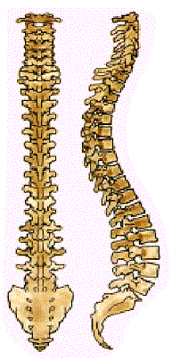

Wirbel, Bandscheiben, Wirbelgelenke und umgebende Muskulatur – der Rücken ist komplizierter als wir auf den ersten Blick vermuten. Darüber hinaus schützt die Wirbelsäule das Rückenmark, die Verbindung zwischen Gehirn einerseits und Muskulatur und Schmerzrezeptoren andererseits.
Zwangshaltungen mit vorgebeugtem Oberkörper, im Knien oder Hocken strengen die Muskulatur besonders an. Entlastung bringen nicht nur Pausen, sondern auch regelmäßige Belastungswechsel.
Weitere Belastungsfaktoren sind das Heben, Tragen und Bewegen schwerer Lasten sowie die Einwirkung von Schwingungen, z. B. auf Erdbaumaschinen. An den Bandscheiben können so dauerhafte Schäden entstehen.
Unser Rücken kann eine Menge ertragen, wenn wir ihn pflegen.
Er braucht Zeit zur Entspannung, aber auch ein regelmäßiges Training seiner Kraft und Beweglichkeit.